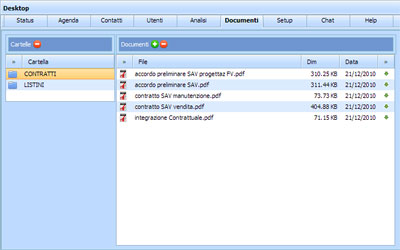

Introduzione Documenti
Next

Nella sezione Documenti possono essere inseriti allegati di uso comune.
Per rendere semplice la consultazione dei Documenti di uso comune è stata prevista una archiviazione per Cartella ed una alberatura di I livello.